Screw Tool¶
参考
T he Screw tool combines a repetitive Spin with a translation, to generate a screw-like, or spiral-shaped, object. Use this tool to create screws, springs, or shell-shaped structures (Sea shells, Wood Screw Tips, Special profiles, etc).
The main difference between the Screw Tool and the Screw Modifier is that the Screw Tool can calculate the angular progressions using the basic profile angle automatically. Or it can adjusting the Axis angular vector without using a second modifier (for example, using the Screw Modifier with a Bevel Modifier, Curve Modifier, etc...), resulting in a much cleaner approach for vertex distribution and usage.
This tool works using open or closed profiles, as well as profiles closed with faces. You can use profiles like an open-edge part that is a part of a complete piece, as well as a closed circle or a half-cut sphere, which will also close the profile end.
You can see some examples of 网格 generated with the Screw tool in Fig. Wood Screw tip done with the screw tool. and Fig. Spring done with the screw tool..
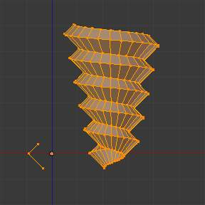
Wood Screw tip done with the screw tool. |
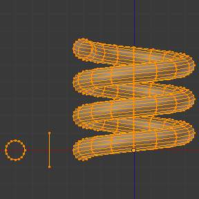
Spring done with the screw tool. |
{kind=link}
{kind=link}
用法¶
- This tool works only with 网格.
- In 编辑模式, the button for the Screw tool operation is located in the Mesh Tools Panel,
T. - To use this tool, you need to create at least one open profile or line to be used as a vector for the height, angular vector and to give Blender a direction.
- The Screw function uses two points given by the open line to create an initial vector to calculate the height and basic angle of the translation vector that is added to the “Spin” for each full rotation (see examples below). If the vector is created with only two vertices at the same (X, Y, Z) location (which won’t give Blender a vector value for height), this will create a normal “Spin”.
- Having at least one vector line, you can add other closed support profiles that will follow this vector during the extrusions (See limitations).
- The direction of the extrusions is calculated by two determinant factors, your point of view in Global Space and the position of your cursor in the 3DView Space using Global coordinates.
- The profile and the vector must be fully selected in 编辑模式 before you click the Screw Button (See Limitations.)
- When you have the vector for the open profile and the other closed profiles selected, click the Screw Button.
Limitations¶
There are strict conditions about your profile selection when you want to use this tool.
You must have at least one open line or open profile,
giving Blender the starting Vector for extrusion, angular vector and height. (e.g.
a simple edge, a half circle, etc...).
You need only to ensure that at least one reference line has two “free” ends.
If two open Lines are given, Blender won’t determine which of them is the vector,
and will then show you an error message,
"You have to select a string of connected vertices too".
You need to select all of the profile vertices that will participate in the Screw
Tool operation; if they are not properly selected,
Blender will also show you the same message.
Note that the open line is always extruded, so if you only use it to “guide” the screw,
you will have to delete it after the tool completion (use linked-selection,
Ctrl-L, to select the whole extrusion of the open line).
If there is any problem with the selection or profiles,
the tool will warn you with the error message:
"You have to select a string of connected vertices too" as seen
in Fig. Screw Error message in the Header of the Info editor. and Fig. Error message when clicking in the Screw Tool with an incorrect or bad selection.,
both in the 信息编辑器 and at the place where you clicked to start performing the operation
(when you click the Screw Button).
Screw Error message in the Header of the Info editor.
Error message when clicking in the Screw Tool with an incorrect or bad selection.
You may have as many profiles as you like (like circles, squares, and so on) - Note that not all vertices in a profile need to be in the same plane, even if this is the most common case. You may also have other, more complex, selected closed islands, but they have to be closed profiles because Blender will seek for only one open profile for the translation, height and angular vector. Some closed meshes that overlap themselves may not screw correctly (for example: Half UVsphere works fine, but more than half could cause the Screw Tool to have wrong behavior or errors), and profiles that are closed with faces (like a cone or half sphere) will be closed automatically at their ends, like if you were extruding a region.
Tip
Simple way to not result in error
Only one open Profile, all of the others can be closed, avoid volumes and some profiles closed with faces...
Options¶
This tool is an interactive and modal tool, and only works in the 编辑模式.
Once you click in the Screw tool in the Mesh Tools Panel,
Blender will enter in the Screw interactive mode, and the Operator Panel at the
end of the Mesh Tools Panel will be replaced so you can adjust the values explained below.
To show the Mesh Tools Panel,
use the shortcut T in the 编辑模式 of the 3D视图编辑窗口.
Once you perform any other operation,
Blender leaves the interactive mode and accepts all of the values. Because it’s modal, you
cannot return to the interactive mode after completing/leaving the operation or changing from
编辑模式 to 物体模式.
If you want to restart the operation from its beginning,
you can press Ctrl-Z at any time in 编辑模式.
- The basic location of the cursor at the point of view (using Global coordinates) will determine around which axis the selection is extruded and spun at first (See Fig. Cursor Basic Location - 变换 Panel.). Blender will copy your cursor location coordinates to the values present in the Center values of the Screw interactive Panel. Depending on the Global View position, Blender will automatically add a value of 1 to one of the Axis Vectors, giving the profiles a starting direction for the Screw Operation and also giving a direction for the extrusions. (See examples below.)
- The position of the 3D游标 will be the starting center of the rotation. Subsequent operations (e.g. pressing the Screw button again), will start from the last selected element. Continuous operations without changing the selection will repeat the operation continuously from the last point.
Cursor Basic Location - 变换 Panel.
Screw Interactive Panel - Mesh Tools Panel (编辑模式).
- Center
- These numeric fields specify the center of the spin. When the tool is called for the first time,
it will copy the (X, Y, Z) location (Global Coordinates)
of the cursor presently in the 3D视图 to start the operation.
You can specify the cursor coordinates using the 变换 Panel in 3D视图,
using shortcut
Tto toggle the Panel, and typing in the 3D游标 Location coordinates. You can adjust these coordinates interactively and specify another place for the spin center during the interactive session. (See Fig. Screw Interactive Panel - Mesh Tools Panel (编辑模式).) - Steps
- This numeric field specifies how many extrusion(s) will be done for each 360 degree turn. The steps are evenly distributed by dividing 360 degree by the number of steps given. The minimum value is 3; the maximum is 256 (See Fig. Screw Interactive Panel - Mesh Tools Panel (编辑模式).)
- Turns:
- This numeric field specifies how many turns will be executed. Blender will add a new full 360 degree turn for each incremental number specified here. The minimum value is 1; the maximum is 256. (See Fig. Screw Interactive Panel - Mesh Tools Panel (编辑模式).)
- Axis
- These three numeric fields vary from (-1.0 to 1.0) and are clamped above those limits. These values correspond to angular vectors from (-90 to 90) degrees. Depending on the position where you started your cursor location and Object operation in the viewport and its axis positions in Global View space and coordinates, Blender will give the proper Axis vector a value of 1, giving the angular vector of the profile a starting direction and giving the extrusions a starting direction based on your view. Blender will let you adjust your axis angular vectors and you can tweak your object such that you can revert the direction of the screw operation (by reverting the angular vector of the height), meaning you can revert the clockwise and counterclockwise direction of some operations, and also adjust the angular vectors of your profile, bending it accordingly. (See Fig. Screw Interactive Panel - Mesh Tools Panel (编辑模式).)
例子¶
The Spring example¶
Circle placed at X -3,0,0.
- Open Blender and delete the default Cube.
- Change from perspective to orthographic view using shortcut
Numpad5. - Change your view from User Ortho to Front Ortho, using the shortcut
Numpad1. You will see the X (red) and Z (blue) coordinate lines. - In case you have moved your cursor by clicking anywhere in the screen, again place your cursor at the Center,
using the shortcut
Shift-Schoosing Cursor to Center or the 变换 Panel, placing your cursor at (0, 0, 0) typing directly into the Cursor 3D Location. - Add a circle using shortcut
Shift-A. - Rotate this circle using the shortcut
R X 9 0andReturn. - Apply the Rotation using
Ctrl-Aand choosing Rotation - Grab and move this circle three Blender Units on the X-Axis to the left;
you can use the shortcut
Ctrlwhile grabbing with the mouse using the standard transform widgets (clicking on the red arrow shown with the object and grabbing while using shortcutCtrluntil the down left info in the 3D视图 marksD. -3.0000 (3.0000) Global), or press the shortcutG X Minus 3andReturn. You can use the 变换 Panel (toggled with the shortcutT, and typeMinus 3andReturnin the Location too. (See the Fig. Circle placed at X -3,0,0.). - You will have to scale your circle using the shortcut
S . 5, thenReturn. - Now enter 编辑模式 using shortcut
Tab. - De-select all vertices using the shortcut
A.
Now we will create a height vector for Blender:
Profile and vector created.
- Press
Ctrland Left clickLMBnear the circle, in more or less at the light grey line of the square above the circle, and, while still pressingCtrl, Left ClickLMBagain in the grey line below the circle. You have created two vertices and an Edge, which Blender will use as the first height and angle vector. - Now, in the 变换 Panel, in the median, clicking in the Global coordinates, for the (X, Y, Z) coordinates, put (-2, 0, -1).
- Right Click
RMBin the other vertex, and again, type its coordinates for (X, Y, Z) to (-2, 0, 1). This will create a straight vertical line with 2 Blender units of Height. - De-select and select everything again with the shortcut
A. (See Fig. Profile and vector created.) - Place again your cursor at the center. (Repeat step 2)
- At this point, we will save this Blender file to recycle the
Spring for another exercise; click with
LMBin File, it is placed at the header of the Info editor, (At the top left side), and choose Save as. Our suggestion is to name it Screw Spring 例子.blend and click in Save as Blender file. You can also use the shortcutShift-Ctrl-Sto open the 文件浏览器 editor in order to save your Blender file. - Click Screw and adjust the Steps and Turns as you like and we have a nice spring, but now here comes the interesting part!
Clockwise and Counterclockwise using the Spring 例子¶
Still in the interactive session of the Screw Tool,
you will see that the Z-Axis Value of the Screw Panel is set to 1.000.
Left click LMB in the middle of the Value and set this value to -1.000.
At first, the Spring was being constructed in a Counterclockwise direction,
and you reverted the operation 180 degrees in the Z-Axis. This is because you have
changed the angular vector of the height you have given to Blender to the opposite direction
(remember, -90 to 90 = 180 degrees ?). See Fig. Spring direction..
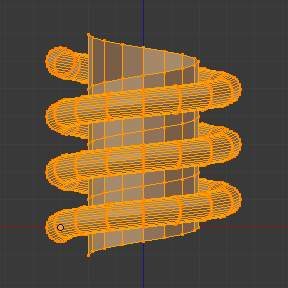
Counterclockwise direction. |
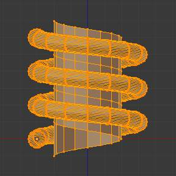
Flipped to Clockwise direction. |
{kind=link}
{kind=link}
It’s also important to note that this vector is related to the same height vector axis used
for the extrusion and we have created a parallel line with the Z-Axis, so, the
sensibility of this vector is in practical sense reactive only to negative and positive values
because it’s aligned with the extrusion axis. Blender will clamp the positive and negative to
its maximum values to make the extrusion follow a direction,
even if the profile starts reverted. The same rule applies to other Global axes when creating
the Object for the Screw Tool;
this means if you create your Object using the Top View
(Shortcut Numpad7 with a straight parallel line following another axis
(for the Top View, the Y-Axis), the vector that gives the height for extrusion will also
change abruptly from negative to positive and vice versa to give the extrusion a direction,
and you will have to tweak the corresponding Axis accordingly to achieve the Clockwise and
Counterclockwise effect.
Note
Vectors that are not parallel with Blender Axis
The high sensibility for the vector doesn’t apply to vectors that give the Screw Tool a starting angle (Ex: any non-parallel vector), meaning Blender won’t need to clamp the values to stabilize a direction for the extrusion, as the inclination of the vector will be clear for Blender and you will have the full degree of freedom to change the vectors. Our example is important because it only changes the direction of the profile without the tilt and/or bending effect, as there is only one direction for the extrusion, parallel to one of the Blender Axes
Bending the Profiles using the Spring 例子¶
Still using the Spring 例子, we can change the remaining vector for the angles that are not related to the extrusion Axis of our Spring, thus bending our spring with the remaining vectors and creating a profile that will also open and/or close because of the change in starting angular vector values. What we are really doing is changing the starting angle of the profile prior to the extrusions. It means that Blender will connect each of the circles inclined with the vector you have given. Below we show two bent 网格 using the Axis vectors and the Spring example. See Fig. Bended Mesh.. These two 网格 generated with the Screw tool were created using the Top Ortho View.
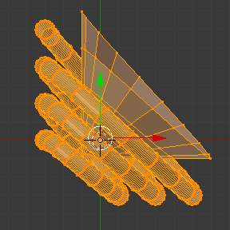
例子 1 - The Axis will give the profile a starting vector angle. |
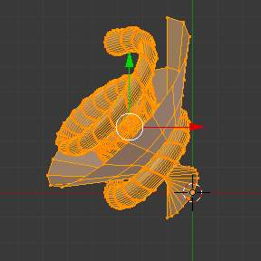
例子 2 - The vector angle is maintained along the extrusions. |
{kind=link}
{kind=link}
Creating perfect Screw Spindles¶
Using the Spring 例子, it’s easy to create perfect Screw Spindles (like the ones present in normal screws that we can buy in hardware stores). Perfect Screw Spindles use a profile with the same height as its vector, and the beginning and ending vertex of the profile are placed at a straight parallel line with the axis of extrusion. The easiest way of achieving this effect is to create a simple profile where the beginning and ending vertices create a straight parallel line. Blender won’t take into account any of the vertices present in the middle but those two to take its angular vector, so the spindles of the screw (which are defined by the turns value) will assembly perfectly with each other.
- Open Blender and click in File located at the header of the Info editor again, choose Open Recent and the file we saved for this exercise. All of the things will be placed exactly the way you saved before. Choose the last saved Blender file; in the last exercise, we gave it the name Screw Spring 例子.blend.
- Press the shortcut
Ato de-select all vertices. - Press the shortcut
B, and Blender will change the cursor; you’re now in border selection mode. - Open a box that selects all of the circle vertices except the two vertices we used to create the height of the extrusions in the last example.
- Use the shortcut
Xto delete them. - Press the shortcut
Ato select the remaining vertices. - Press the shortcut
Wfor the Specials Menu, and select Subdivide - Now, click with the Right Mouse button at the middle vertex.
- Grab this vertex using the shortcut
G X Minus 1andReturn. See Fig. Profile for a perfect screw spindle.. - At this point, we will save this Blender file to recycle the generated Screw for another exercise;
click with
LMBin File – it is in the header of the Info editor (at the top left side), and choose Save as. Our suggestion is to name it Screw Hardware 例子.blend and click in Save as Blender file. You can also use the shortcutShift-Ctrl-Sto open the 文件浏览器 editor in order to save your Blender file. - Press shortcut
Atwice to de-select and select all vertices again. - Now press Screw.
- Change Steps and Turns as you like. Fig. Generated Mesh. - Shows you an example of the results.
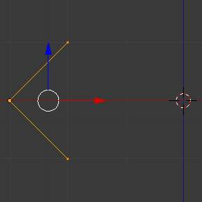
Profile for a perfect screw spindle.
The starting and ending vertices are forming a parallel line with the Blender Axis.
|
{kind=link}
{kind=link}
Here, in Fig. Ramp., we show you an example using a different profile, but maintaining the beginning and ending vertices at the same position. The generated mesh looks like a medieval ramp!
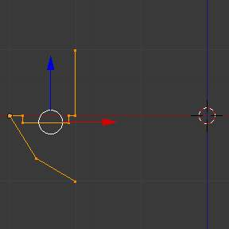
Profile with starting and ending vertices forming a parallel line with the Blender Axis. |
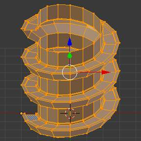
Generated Mesh with the profile at the left. We have inclined the visualization a bit. |
{kind=link}
{kind=link}
As you can see, the Screw spindles are perfectly assembled with each other, and they follow a straight line from top to bottom. You can also change the Clockwise and Counterclockwise direction using this example, to create right and left screw spindles. At this point, you can give the screw another dimension, changing the Center of the Spin Extrusion, making it more suitable to your needs or calculating a perfect screw and merging its vertices with a cylinder, modeling its head, etc.
A Screw Tip¶
As we have explained before, the Screw tool generates clean and simple meshes to deal with; they are light, well-connected and are created with very predictable results. This is due to the Blender calculations taking into account not only the height of the vector, but also its starting angle. It means that Blender will connect the vertices with each other in a way that they follow a continuous cycle along the extruded generated profile.
In this example, you will learn how to create a simple Screw Tip (like the ones we use for wood; we have shown an example at the beginning of this page). To make this new example as short as possible, we will recycle our last example (again).
- Open Blender and click in File located in the header of the Info editor again; choose Open Recent and the file we saved for this exercise. All of the things will be placed exactly the way you saved before. Choose the last saved Blender file; in the last exercise, we gave it the name Screw Hardware 例子.blend.
- Grab the upper vertex and move a bit to the left, but no more than you have moved your last vertex. (See Fig. Profile With Starting Vector Angle.)
- Press the shortcut
Atwice to de-select and select all. - Press the shortcut
Shift-Sand select Cursor to Center - Press Screw.
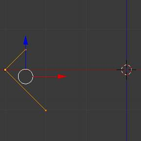
Profile With Starting Vector Angle. |
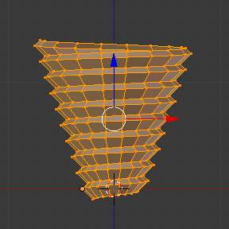
Generated Mesh with the Profile. |
{kind=link}
{kind=link}
As you can see in Fig. Generated Mesh with the Profile., Blender follows the basic angular vector of the profile, and the profile basic angle determines whether the extruded subsequent configured turns will open or close the resulting mesh following this angle. The vector of the extrusion angle is determined by the starting and ending Vertex of the profile.